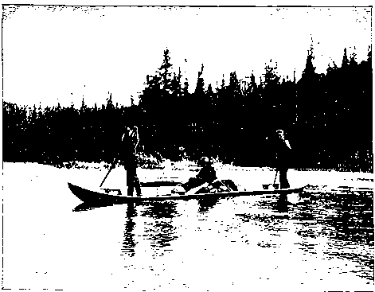
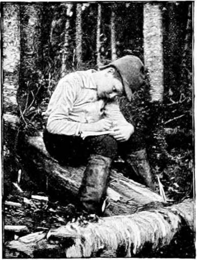

Sport In An Untouched American Wilderness
Description
This section is from the book "Hunting", by Archibald Rogers. Also available from Amazon: Hunting.
Sport In An Untouched American Wilderness
MOST of the great solitude which two hundred years ago constituted the peninsula of Acadia is as undisturbed by civilized men as it was when British ships carried the French settlers away from its border. The interior has never been definitely surveyed or adequately mapped.
In the United States we have seen the forests melt away like snow in an April wind, and have come to look upon them as merely transitory; so that it is difficult for Americans to realize the extent to which, in the region of earliest European occupation of Canada, primeval conditions endure. In the immediate presence of a civilization more than two hundred years old, the wilderness of the Maritime Provinces preserves its perpetual youth, sheltering, in undiminished numbers, its royal inhabitants, —the moose, the caribou, the black bear, the partridge, the salmon, and the trout. Nowhere on this continent can be found a more striking example of forest persistence than in the region east of the State of Maine, between the Atlantic Ocean on the south and the Gulf of St. Lawrence on the north. The interior of this peninsula is almost entirely undisturbed. The few who have penetrated its depths have found it a veritable land of enchantment.
On an afternoon early in September I was sitting in the writing-room at Young's Hotel, in Boston, awaiting the arrival by express of an extra heavy rifle which had been made to order. At six o'clock that evening I took the cars for Fredericton, the capital of New Brunswick, which has been well described as "the quietest city of its size north of the Potomac;" and at noon the next day entered the woods, which extend, with scarcely a break, hundreds of miles up to the Arctic limit of timber.
For, though the New Brunswick capital has for many years been a centre of education and refinement, you could today fire a long-range rifle-bullet from the dome of the parliament building into the edge of the forest which stretches away to the north, broken only by the St. Lawrence. The deer wander within an hour's walk of the ancient city; and on the smooth road that makes off to the upper St. John River settlements you may see the partridges run into the brush, within a mile of town. The birds are more innocent than those we know. Ten miles from Fredericton, if you meet a Canada grouse, it will fly unconcernedly up to the nearest branch, from which perch of fancied security it will gaze curiously down upon you, while you cut a slender sapling, attach a looped string to the small end, slowly move it right up to the bird's beak, drop the noose over its neck, and with a slight jerk pull the trusting creature down, fluttering but unhurt. A barnyard hen would be far more sophisticated.
There is a little railroad which runs from Fredericton to Chatham, along the valley of the Southwest Miramichi River. It possesses two locomotives, each making a daily run of one hundred and ten miles and return. One summer a circus wandered up into that country, exhibiting a t St. John, Chatham, and Fredericton. It took one of the locomotives to haul the circus train, and so for two days the regular business of the road was abandoned.
Writing Home.
At one of the intermediate stations you may leave the train, cross the river, pass two or three farms, and then plunge into a stunted forest broken only by barrens, beaver meadows, broad lakes, and lofty mountains. A few miles back the last vestige of a road disappears; and if you are fortunate enough to have the services of a guide who knows the woods, he can conduct you, by much walking, into a land of surprises. Very few, indeed, are the men who have ever seen the tranquil beauty of those lovely solitudes. There is a mellowness about the mountain scenery which makes the purple granite peaks seem in the distance like immense heaps of the ripe blueberries with which they are covered, and the autumnal foliage is unequalled in brilliancy.
The larger and less known portion of this wilderness lies between the Resti-gouche River on the north, the Intercolonial Railway, paralleling the seacoast on the east; the Southwest Miramichi River on the south, and the St. John River on the west, within the extensive counties of Northumberland, York, Carleton, Victoria, Madawaska, and Restigouche. The least accessible portion is about the headwaters of the streams which ultimately form the Miramichi, Nepisiguit, and Tobique Rivers. These streams rise in an unmapped mountainous tract, which, though as beautiful as the Adirondack region, is not penetrated by half a dozen tourists in a season. The reason for this delightful neglect is a commercial one. There is practically no pine timber. Plenty of trees grow; but they are birches, firs, small spruces, and others not attractive to the lumberman. The land, if cleared, would not be good for farming purposes. This is why the game-trails around the lakes, across the barrens, and through the thickets, grow deeper year by year, trodden as they have been by countless generations of animals. On the day when the Hebrew psalmist was singing, "Every beast of the forest is mine," that very day the moose and caribou at sunset came down to the shores of the lonely lakes behind those mountains, just as other moose and caribou will come to-night.
I have spent two seasons in the very centre of this wilderness. From Fredericton, by the railroad of two locomotives, ambitiously called the Canada Eastern, it is three hours' ride — the distance is forty miles—to Boiestown. There, thanks to arrangements made by a friend in Fredericton, my companion and myself were met by Henry Braithwaite, of Stanley, one of the very few guides who know how to reach the heart of the interior. A wagon carried our tent and outfit five miles. Then we were at the very last house, and there everything was loaded upon a sled with wide wooden runners. Two horses struggled with this load, urged on by a teamster whose profanity was a household word in the settled portion of that valley. For twenty-five miles, over roots, fallen trees, and bare ground, this summer sled proceeded; and then, where the decayed lumber road ended, and the country became very rough, we said good-by to the old teamster, and for fifty-seven days we did not see a human face, nor the smoke of another fire; nor did we hear the sound of a rifle-shot, except our own. The rest of the journey to Little Southwest Lake, sixty miles away, was made on foot — as indeed the whole journey from Boiestown had been, after the first five miles. There was no road. The experienced Braithwaite led us on and on, across boggy barrens, through thick swamps, where occasional axe-marks on the trees were the only street signs he needed, up steep mountainsides, and along the shores of unnamed lakes. We went in expecting to remain three weeks. When we had been gone about nine weeks, and two feet of snow had fallen, our friends in the United States began telegraphing to the Boiestown station agent to hunt us up regardless of expense. He could not find a man in all the settlement who knew the way beyond the Dungarvon River, where the team had turned back. This detail is mentioned for the purpose of demonstrating that the large game with which that wilderness abounds is practically unhunted.
Continue to:
- prev: Climbing For White Goats. Continued
- Table of Contents
- next: Sport In An Untouched American Wilderness. Part 2